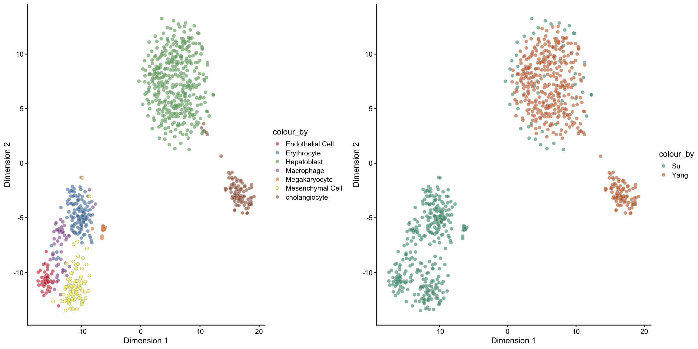
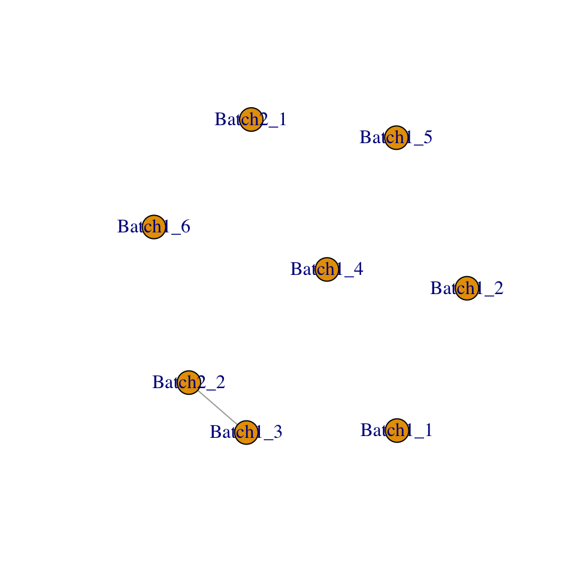
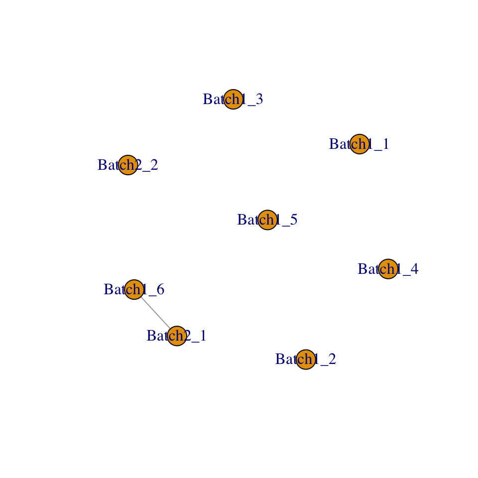

scMerge package
Sydney Precision Bioinformatics Group
03/05/2019
1 Jean’s comments
strandfctmanipulations as blackbox.- Change “batch” into “data sources”/“datasets”
- Separate plotly plots into two
- Only keep Su and Yang.
- Dropping E10.5 and E16.5
2 Introduction
scMerge is a method developed by the Sydney Precision Bioinformatics Group. It aims to merge multiple scRNA-Seq data so that researchers can look for biological signals on data pooled from multiple sources. The key to achieving a good merge is to remove the noise.
Here are some plots where the raw data is separated by the data-batches but not cell types.
scMerge corrects data-batch separations by
- identifying cells of identical cell types and pooling these together
- identitying data-batch noises using Stably Expressed Genes (SEGs) and removing these from the data.
Thus, scMerge can be thought of a two-step process!
3 Supervised scMerge
We will begin with a liver dataset. The data are stored as four separate RDS files (this is similar to a RData file, but only one data can be stored in each RDS file).
| Name | ID | Author | DOI or URL | Protocol | Organism | Tissue | # of cell types | # of cells | # of batches |
|---|---|---|---|---|---|---|---|---|---|
| Liver | GSE87795 | Su | 10.1186/s12864-017-4342-x | SMARTer/C1 | Mouse | Liver | 6 | 1236 | 6 |
| GSE90047 | Yang | 10.1002/hep.29353 | Smart-Seq2 | 2 | 2 | ||||
| GSE87038 | Dong | 10.1186/s13059-018-1416-2 | STRT-seq | 4 | 3 | ||||
| GSE96981 | Camp | 10.1038/nature22796 | SMARTer/C1 | 3 | 3 |
su = readRDS("data/sce_GSE87795.rds")
yang = readRDS("data/sce_GSE90047.rds")
# dong = readRDS("data/sce_GSE87038.rds")
# camp = readRDS("data/sce_GSE96981.rds")
sce_list = list(
su = su,
yang = yang
# dong = dong,
# camp = camp
)library(scMerge)
library(scater)
library(dplyr)
library(gridExtra)
library(plotly)
library(stringr)
library(forcats)
library(tibble)
library(dplyr)
theme_set(theme_classic(16)
# theme(legend.position = "bottom")
)
# purrr::map(sce_list, ~ colData(.x) %>% colnames)
sce_combine = scMerge::sce_cbind(sce_list = sce_list,
method = "union",
colData_names = c("cellTypes", "stage"))
cat("Please copy and paste this")## Please copy and paste this# sce_combine = sce_combine[,stringr::str_detect(sce_combine$cellTypes, "cholangiocyte|Epithelial Cell|hepatoblast|Hepatoblast|Mesenchymal Cell|Endothelial Cell|Hematopoietic|Immune cell|Stellate Cell")]
colData(sce_combine)$cellTypes = forcats::fct_recode(
colData(sce_combine)$cellTypes,
Hepatoblast = "hepatoblast/hepatocyte"
# Hepatoblast = "Hepatoblasts"
) %>%
droplevels()
sce_combine = sce_combine[rowSums(SingleCellExperiment::counts(sce_combine)) != 0,
colSums(SingleCellExperiment::counts(sce_combine)) != 0]table(sce_combine$cellTypes, sce_combine$batch)##
## batch 1 batch 2
## Endothelial Cell 52 0
## Erythrocyte 132 0
## Hepatoblast 49 345
## Macrophage 53 0
## Megakaryocyte 17 0
## Mesenchymal Cell 86 0
## cholangiocyte 0 103table(sce_combine$cellTypes, sce_combine$stage)##
## E11.5 E12.5 E13.5 E14.5 E16.5 E10.5 E15.5 E17.5
## Endothelial Cell 8 12 12 13 7 0 0 0
## Erythrocyte 1 34 30 43 24 0 0 0
## Hepatoblast 70 45 66 70 12 54 41 36
## Macrophage 3 6 9 12 23 0 0 0
## Megakaryocyte 1 7 5 2 2 0 0 0
## Mesenchymal Cell 43 25 4 10 4 0 0 0
## cholangiocyte 2 3 10 17 0 0 36 35table(sce_combine$batch, sce_combine$stage)##
## E11.5 E12.5 E13.5 E14.5 E16.5 E10.5 E15.5 E17.5
## batch 1 58 91 71 97 72 0 0 0
## batch 2 70 41 65 70 0 54 77 71cell_data = colData(sce_combine) %>%
as.data.frame() %>%
group_by(cellTypes, stage, batch) %>%
dplyr::summarise(n = n()) %>%
ungroup() %>%
tidyr::complete(cellTypes, stage, batch, fill = list(n = 0)) %>%
dplyr::mutate(
stage = factor(stage, levels = sort(unique(levels(stage))))
)
cell_data %>%
ggplot(aes(x = stage, y = cellTypes, fill = n, label = n)) +
geom_tile() +
geom_text() +
facet_wrap(~batch) +
scale_fill_distiller(palette = "Reds", direction = 1) +
labs(title = "Number of cells split by batch, celltypes and stage")
pca_logcounts_cellTypes = scater::plotPCA(sce_combine,
colour_by = "cellTypes",
run_args = list(exprs_values = "logcounts")) +
scale_fill_brewer(palette = "Set1")
pca_logcounts_batch = scater::plotPCA(sce_combine,
colour_by = "batch",
run_args = list(exprs_values = "logcounts")) +
scale_fill_brewer(palette = "Dark2")
grid.arrange(pca_logcounts_cellTypes, pca_logcounts_batch, nrow = 1)
data("segList_ensemblGeneID", package = "scMerge")
scMerge_supervised <- scMerge(
sce_combine = sce_combine,
ctl = which(rownames(sce_combine) %in% segList_ensemblGeneID$mouse$mouse_scSEG),
cell_type = sce_combine$cellTypes,
replicate_prop = 1,
assay_name = "scMerge_supervised",
verbose = TRUE)## Step 1: Computation will run in serial## Performing supervised scMerge with:
## 1. Cell type information
## 2. No cell type indices
## 3. No mutual nearest neighbour clustering
## Dimension of the replicates mapping matrix:
## [1] 837 7## Step 2: Performing RUV normalisation. This will take minutes to hours.## scMerge complete!scMerge_supervised## class: SingleCellExperiment
## dim: 23801 837
## metadata(5): ruvK ruvK_optimal scRep_res timeReplicates timeRuv
## assays(3): counts logcounts scMerge_supervised
## rownames(23801): ENSMUSG00000104017 ENSMUSG00000102331 ...
## ERCC-00158 ERCC-00164
## rowData names(0):
## colnames(837): E11.5_C07 E11.5_C44 ... E17.5E_4_16 E17.5E_4_16.1
## colData names(3): cellTypes stage batch
## reducedDimNames(0):
## spikeNames(0):pca_scMerge_supervised_cellTypes = scater::plotPCA(scMerge_supervised,
colour_by = "cellTypes",
run_args = list(exprs_values = "scMerge_supervised")) +
scale_fill_brewer(palette = "Set1")
pca_scMerge_supervised_batch = scater::plotPCA(scMerge_supervised,
colour_by = "batch",
run_args = list(exprs_values = "scMerge_supervised")) +
scale_fill_brewer(palette = "Dark2")
grid.arrange(pca_scMerge_supervised_cellTypes, pca_scMerge_supervised_batch, nrow = 1)
4 Unsupervised scMerge
scMerge_unsupervised <- scMerge(
sce_combine = sce_combine,
ctl = which(rownames(sce_combine) %in% segList_ensemblGeneID$mouse$mouse_scSEG),
kmeansK = c(6, 2),
replicate_prop = 1,
assay_name = "scMerge_unsupervised",
verbose = TRUE)## Step 1: Computation will run in serial## Performing unsupervised scMerge with:
## 1. No cell type information
## 2. Cell type indices not revelant here
## 3. Mutual nearest neighbour matching
## 4. No supplied marker and no supplied marker_list for MNN clustering
## Finding Highly Variable Genes for clustering
## 3650 HVG were found
## 5. PCA and Kmeans clustering will be performed on each batch
## 6. Create Mutual Nearest Clusters. Preview cells-cell_type matching output matrix:## group batch cluster
## 1 1 1 1
## 2 2 2 1
## Dimension of the replicates mapping matrix:
## [1] 837 8## Step 2: Performing RUV normalisation. This will take minutes to hours.## scMerge complete!
pca_scMerge_unsupervised_cellTypes = scater::plotPCA(scMerge_unsupervised,
colour_by = "cellTypes",
run_args = list(exprs_values = "scMerge_unsupervised")) +
scale_fill_brewer(palette = "Set1")
pca_scMerge_unsupervised_batch = scater::plotPCA(scMerge_unsupervised,
colour_by = "batch",
run_args = list(exprs_values = "scMerge_unsupervised")) +
scale_fill_brewer(palette = "Dark2")
grid.arrange(pca_scMerge_unsupervised_cellTypes, pca_scMerge_unsupervised_batch, nrow = 1)
5 Semi-supervised scMerge
scMerge_semisupervised <- scMerge(
sce_combine = sce_combine,
ctl = which(rownames(sce_combine) %in% segList_ensemblGeneID$mouse$mouse_scSEG),
kmeansK = c(6,2),
replicate_prop = 1,
WV = sce_combine$stage,
# WV_marker = c("Afp","Alb","Epcam"),
WV_marker = c("ENSMUSG00000045394","ENSMUSG00000054932","ENSMUSG00000045394"),
assay_name = "scMerge_semisupervised",
verbose = TRUE)## Step 1: Computation will run in serial## Performing unsupervised scMerge with:
## 1. No cell type information
## 2. Cell type indices not revelant here
## 3. Mutual nearest neighbour matching
## 4. No supplied marker and no supplied marker_list for MNN clustering
## Finding Highly Variable Genes for clustering
## 3650 HVG were found
## 5. PCA and Kmeans clustering will be performed on each batch
## 6. Create Mutual Nearest Clusters. Preview cells-cell_type matching output matrix:## group batch cluster
## 1 1 1 4
## 2 2 2 2
## 7. Performing semi-supervised scMerge with wanted variation
## Dimension of the replicates mapping matrix:
## [1] 837 22## Step 2: Performing RUV normalisation. This will take minutes to hours.## scMerge complete!
pca_scMerge_semisupervised_cellTypes = scater::plotPCA(scMerge_semisupervised,
colour_by = "cellTypes",
run_args = list(exprs_values = "scMerge_semisupervised"))
pca_scMerge_semisupervised_batch = scater::plotPCA(scMerge_semisupervised,
colour_by = "batch",
run_args = list(exprs_values = "scMerge_semisupervised"))
grid.arrange(pca_scMerge_semisupervised_cellTypes, pca_scMerge_semisupervised_batch, nrow = 1)
scater::plotExpression(scMerge_supervised[,scMerge_supervised$cellTypes == "Hepatoblast"],
features = c("ENSMUSG00000045394","ENSMUSG00000054932","ENSMUSG00000045394"),
exprs_values = "scMerge_supervised",
colour_by = "batch") +
labs(title = "Expression of the WV marker genes for Hepatoblast only in supervied-scMerge")
scater::plotExpression(scMerge_unsupervised[,scMerge_unsupervised$cellTypes == "Hepatoblast"],
features = c("ENSMUSG00000045394","ENSMUSG00000054932","ENSMUSG00000045394"),
exprs_values = "scMerge_unsupervised",
colour_by = "batch") +
labs(title = "Expression of the WV marker genes for Hepatoblast only in unsupervied-scMerge")
scater::plotExpression(scMerge_semisupervised[,scMerge_semisupervised$cellTypes == "Hepatoblast"],
features = c("ENSMUSG00000045394","ENSMUSG00000054932","ENSMUSG00000045394"),
exprs_values = "scMerge_semisupervised",
colour_by = "batch") +
labs(title = "Expression of the WV marker genes for Hepatoblast only in semisupervied-scMerge")
6 Session Info
sessionInfo()## R version 3.6.0 (2019-04-26)
## Platform: x86_64-apple-darwin15.6.0 (64-bit)
## Running under: macOS High Sierra 10.13.6
##
## Matrix products: default
## BLAS: /Library/Frameworks/R.framework/Versions/3.6/Resources/lib/libRblas.0.dylib
## LAPACK: /Library/Frameworks/R.framework/Versions/3.6/Resources/lib/libRlapack.dylib
##
## locale:
## [1] en_AU.UTF-8/en_AU.UTF-8/en_AU.UTF-8/C/en_AU.UTF-8/en_AU.UTF-8
##
## attached base packages:
## [1] parallel stats4 stats graphics grDevices utils datasets
## [8] methods base
##
## other attached packages:
## [1] tibble_2.1.2 forcats_0.4.0
## [3] stringr_1.4.0 plotly_4.9.0
## [5] gridExtra_2.3 dplyr_0.8.1
## [7] scater_1.12.2 ggplot2_3.1.1
## [9] SingleCellExperiment_1.6.0 SummarizedExperiment_1.14.0
## [11] DelayedArray_0.10.0 BiocParallel_1.18.0
## [13] matrixStats_0.54.0 Biobase_2.44.0
## [15] GenomicRanges_1.36.0 GenomeInfoDb_1.20.0
## [17] IRanges_2.18.1 S4Vectors_0.22.0
## [19] BiocGenerics_0.30.0 scMerge_1.1.1
##
## loaded via a namespace (and not attached):
## [1] nlme_3.1-140 bitops_1.0-6
## [3] httr_1.4.0 RColorBrewer_1.1-2
## [5] numDeriv_2016.8-1 tools_3.6.0
## [7] backports_1.1.4 R6_2.4.0
## [9] irlba_2.3.3 vipor_0.4.5
## [11] rpart_4.1-15 KernSmooth_2.23-15
## [13] Hmisc_4.2-0 lazyeval_0.2.2
## [15] mgcv_1.8-28 colorspace_1.4-1
## [17] nnet_7.3-12 withr_2.1.2
## [19] tidyselect_0.2.5 compiler_3.6.0
## [21] BiocNeighbors_1.2.0 htmlTable_1.13.1
## [23] labeling_0.3 caTools_1.17.1.2
## [25] scales_1.0.0 checkmate_1.9.3
## [27] proxy_0.4-23 digest_0.6.19
## [29] foreign_0.8-71 rmarkdown_1.13
## [31] XVector_0.24.0 base64enc_0.1-3
## [33] pkgconfig_2.0.2 htmltools_0.3.6
## [35] ruv_0.9.7 bbmle_1.0.20
## [37] htmlwidgets_1.3 rlang_0.3.4
## [39] rstudioapi_0.10 DelayedMatrixStats_1.6.0
## [41] jsonlite_1.6 gtools_3.8.1
## [43] acepack_1.4.1 RCurl_1.95-4.12
## [45] magrittr_1.5 BiocSingular_1.0.0
## [47] GenomeInfoDbData_1.2.1 Formula_1.2-3
## [49] Matrix_1.2-17 ggbeeswarm_0.6.0
## [51] Rcpp_1.0.1 munsell_0.5.0
## [53] viridis_0.5.1 stringi_1.4.3
## [55] yaml_2.2.0 zlibbioc_1.30.0
## [57] gplots_3.0.1.1 plyr_1.8.4
## [59] grid_3.6.0 gdata_2.18.0
## [61] M3Drop_1.10.0 reldist_1.6-6
## [63] crayon_1.3.4 lattice_0.20-38
## [65] cowplot_0.9.4 splines_3.6.0
## [67] knitr_1.23 pillar_1.4.1
## [69] igraph_1.2.4.1 codetools_0.2-16
## [71] glue_1.3.1 evaluate_0.14
## [73] latticeExtra_0.6-28 data.table_1.12.2
## [75] foreach_1.4.4 tidyr_0.8.3
## [77] gtable_0.3.0 purrr_0.3.2
## [79] assertthat_0.2.1 xfun_0.7
## [81] rsvd_1.0.1 RcppEigen_0.3.3.5.0
## [83] viridisLite_0.3.0 survival_2.44-1.1
## [85] iterators_1.0.10 beeswarm_0.2.3
## [87] cluster_2.0.9 statmod_1.4.32t2 - t1## Time difference of 1.437707 mins